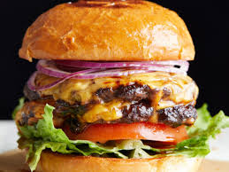

Ham Burger

Description
A juicy beef patty nestled between two toasted buns, often topped with cheese, lettuce, tomato, onion, and condiments like ketchup, mustard, and mayonnaise.
Ingredients
- Ground beef
- Hamburger buns
- Cheese slices
- Lettuce
- Tomato
- Onion
- Ketchup
- Mustard
- Mayonnaise
Steps
- Form patties: Shape ground beef into patties.
- Cook patties: Grill or pan-fry patties to your desired doneness.
- Toast buns: Toast hamburger buns lightly.
- Assemble: Place a cooked patty on the bottom bun, top with cheese, lettuce, tomato, onion, and condiments.
- Enjoy: Place the top bun on and savor your delicious hamburger!
Back Home